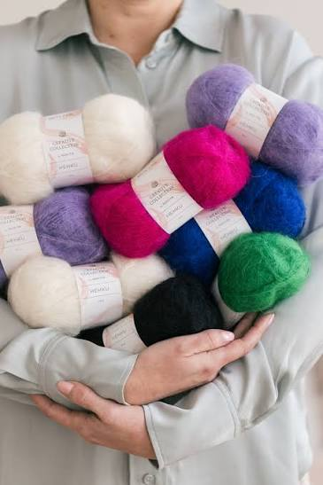

Neulonta rokkaa!
Tervetuloa Neulontasivustolle - Neulonta rokkaa!
"Neuletöiden avulla rentoudut ja näet heti lopputuloksen"
Sivuston kautta voit opetella tekemään erilaisia neulontatöitä. Paina näppäimistöltä F12 ja valitse Console jotta näet tervehdykseni!
Kurkkaa helppoja neuleohjeita:

Moni kuvittelee neulonnan olevan vaikeaa, mutta sitä se ei ole! Esimerkiksi perusvillasukka on helppoa tehdä.
Netti on pullollaan hyviä neulontaohjeita ja esimerkiksi Novitan sivustolta löydät erinomaisia ohjeita
Voit neuloa itsellesi tai lahjaksi esimerkiksi:
- Villasukkia
- Villapaitoja
- Villahuiveja
Haluatko saada uutiskirjeitä ajankohtaisista asioista? Liity postituslistallemme!